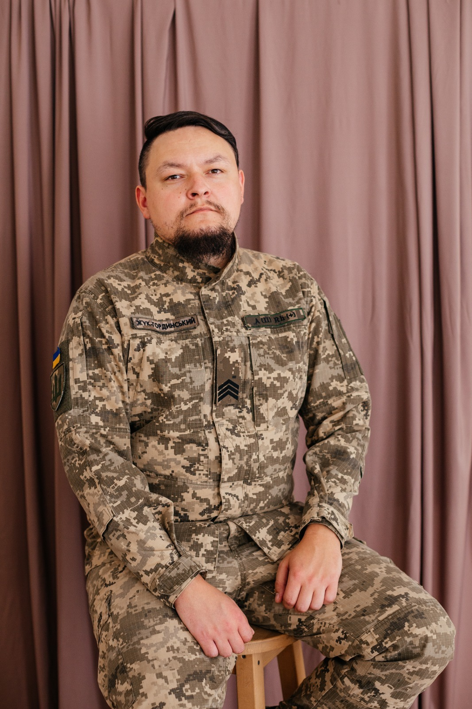

У часи, коли війна кидає жорстокі виклики на фронті, а безжальний ворог атакує, не даючи ні хвилини для спочинку, хочеться забути про все це, заснути і просто сподіватись на те, що наступного ранку ситуація стане кращою. «Сьогодні мотивація є – завтра немає, післязавтра те, що мотивувало сьогодні – перестає мотивувати. Тому рятує лиш наш світогляд: коли ми усвідомлюємо, що ця війна і боротьба – це продовження боротьби наших предків, якій ми покликані покласти кінець. Адже в зоні ризику стоїть існування нації, наша ідентифікація, історія та віра», – каже отець ПЦУ та військовий капелан Юрій Жук-Гординський.
Юрій Жук-Гординський народився у Білорусі, у сім’ї військовослужбовця. Але ще будучи маленьким, Юрій із сім'єю переїхав жити до Львова, де пройшло дитинство та навчання хлопця. Після закінчення школи навчався у Львівському поліграфічному коледжі, УАДі, УКУ та Львівській Православній Богословній академій.
У Львівському поліграфічному коледжі навчався одночасно на двох спеціальностях: «Інженерна механіка» та «Видавничо-поліграфічна справа». «Коледж єднає», адже саме тут Юрій зустрів свою майбутню дружину Ярину, з якою тепер разом виховують маленьку донечку. Куратор його групи Гермак Роман згадує про нього як про спокійного, покірливого, зрілого, дуже начитаного хлопця, з яким можна було розмовляти на будь-які теми. Викладачі й одногрупники любили Юрія. Він був відмінником і закінчив коледж із червоним дипломом.
Наш випускник часто згадує про теплу атмосферу коледжу та про хороших викладачів: улюбленого куратора Романа Гермака, Богдана Репету, Олега Ковалишина, Юрія Філіпчука, Ігоря Снігура та інших викладачів, які не просто давали знання, а й робили вагомий внесок у виховання. «Тут гартувалась сталь. На денному відділенні в механіків був справжній чоловічий колектив. Пережили ми разом багато цікавого. Дещо згадую з усмішкою, а деякі моменти згадуємо з одногрупниками при зустрічі, – мовить Юрій. – Найбільше мені запам'ятався конкурс з англійської мови серед коледжів Львівської області. В 2014 році ми посіли перше місце під керівництвом нашої викладачки з англійської мови Марії Теодорівни. Нас в команді було 4. Я, моя майбутня дружина та ще 2 студентів».
Від початку повномаштабного вторгнення отець Юрій Жук-Гординський вирішив не стояти осторонь, тож уже незабаром поєднував службу санітарного інструктора та військового капелана. Після бойових дій на Херсонщині й під Соледаром очолив службу військового капеланства в ОТУ «Соледар», а згодом продовжив службу в 11 армійському корпусі в складі ОТУ «Луганськ».
Капелан зазначив, що найбільше у служінні його надихають самі побратими та посестри. «Ніколи не перестану пишатися тими козаками та козачками, з якими Господь поблагословив зустрітися в такий нелегкий час. Про кожного та про кожну можна написати окрему книгу».
Також він стверджує, що найважчим обов’язком капелана – це завжди бути поруч. «Сьогодні, це гасло всі військові капелани присвячують воїнам своїх підрозділів, розділяючи побут разом. Однак, на жаль, такими є жорстокі реалії війни, коли в сім'ях негаразди, коли вони руйнуються через виклики сьогодення, коли відбуваються кризові ситуації. Власне в цьому пом'якшенні серця і полягає покликання».
Також покликання є у кожного з нас. І у кожного воно різне. Яким би воно не було, ми маємо завжди пам’ятати про ближніх. Священник заохочує нас до того, щоб ми за можливості допомагали один одному. «Це може бути підтримка сімей та родин воїнів, які опинилися в скрутному становищі, допомога в зборах для військових, моральна підтримка, збереження пам'яті та просто теплі вдячні слова або обійми, – говорить Юрій, одразу доповнюючи: – В Євангелії від Івана є такі слова: “Багато є й іншого, що Ісус учинив. Але думаю, що коли б написати про все те, зокрема про кожне, то й сам світ не вмістив би написаних книг! Амінь (Івана 21:25)”. Так ось, Ісус творить справи нашими руками. Дуже часто ближній, який перебуває біля нас, є інструментом в руках Божих, через кого Господь промовляє та діє».
Священник нагадує, що ми не самі. Що Господь поруч. І попри все ми маємо допомагати фронту рушити, бо сам він цього не зробить.
«Кожна добра справа на благо війська, кожна ваша молитва – це світло, яке тримає тінь. Не бійтесь труднощів та викликів. Саме вони вас гартують. Кожна перемога починається з нашого світогляду та усвідомлення того, що ми робимо велику справу».
Завершив нашу розмову отець Юрій зверненням до молодого покоління, кажучи: «Любіть Україну, моліться за тих, хто її боронить, шануйте батьків, поважайте викладачів та довіряйте Богові. Ви, покоління, що підростає, маєте бути світлішими за попередні. Світлішими за сонце, яке сходить на Донбасі, адже ви є тими, заради кого сьогодні наші люди стримують жорстокого та лютого ворога. Ваше світло та тепло світить в кожному окопі та зігріває фронт навіть у найлютіші морози. Амінь».
Підготувала Анютка Орищак, студентка спеціальності «Журналістика»